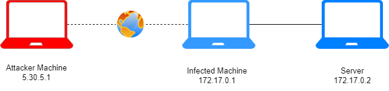
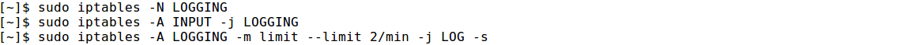
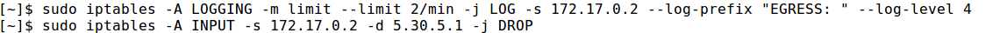
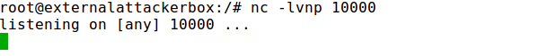
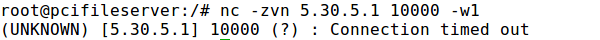
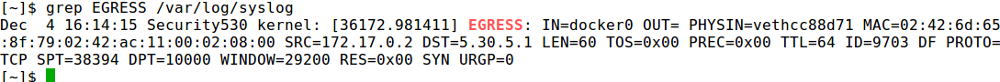

Log all the dropped input packets of iptables to syslog and then Drop them
Log all the dropped input packets of iptables to syslog and then Drop them(https://www.thegeekstuff.com/2012/08/iptables-log-packets/)1. Create a new user defined chain called LOGGING
2. incoming packets will jump in the LOGGING chain
sudo iptables -A INPUT -j LOGGING
3. Log the incoming packets to syslog (/var/log/syslog)
sudo iptables -A LOGGING -m limit --limit 2/min -j LOG -s [TargetFileServerIp] --log-prefix "EGRESS: " --log-level 4
◇ -m limit: This uses the limit matching module. Using this you can limit the logging using –limit option.
◇ -limit 2/min: This indicates the maximum average matching rate for logging. In this example, for the similar packets it will limit logging to 2 per minute. You can also specify 2/second, 2/minute, 2/hour, 2/day. This is helpful when you don’t want to clutter your log messages with repeated messages of the same dropped packets.
◇ -j LOG: This indicates that the target for this packet is LOG. i.e write to the log file.
◇ -log-prefix “EGRESS: ” You can specify any log prefix, which will be appended to the log messages that will be written to the /var/log/messages file
◇ -log-level 4 This is the standard syslog levels. 4 is warning. You can use number from the range 0 through 7. 0 is emergency and 7 is debug.
4. Finally, drop all the packets that came to the LOGGING chain. i.e now it really drops the incoming packets
sudo iptables -A INPUT -s [TargetFileServerIp] -d [attackerIp] -j DROP
Set firewall rules above:
 Check if now we can connect with Firewall Rules set:
1. Below we can see that when from the Target File Server we try to communicate with the Attacker machine, we cannot!
2. Attempt to connect to the External Attacker Box (like a port scan)
 As we can see it will fail
3. Show the attempts that are been logged in /var/log/syslog. Note that this command will show our --log-prefix EGRESS: that we have set
